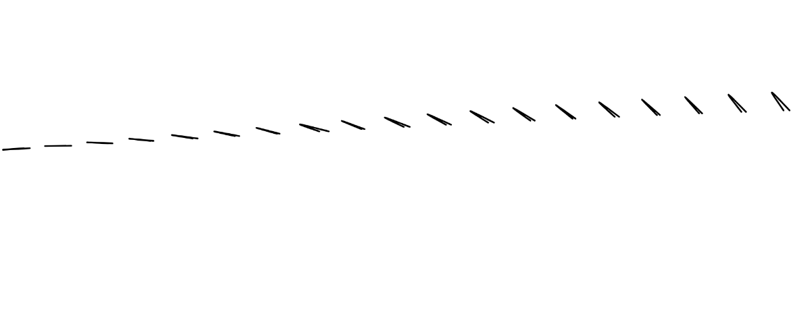
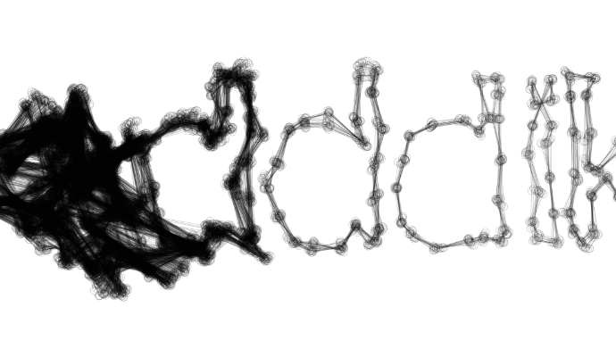
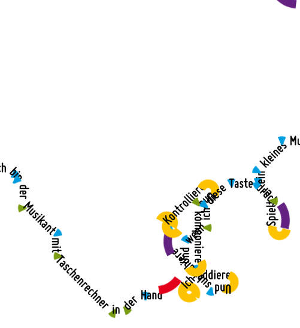
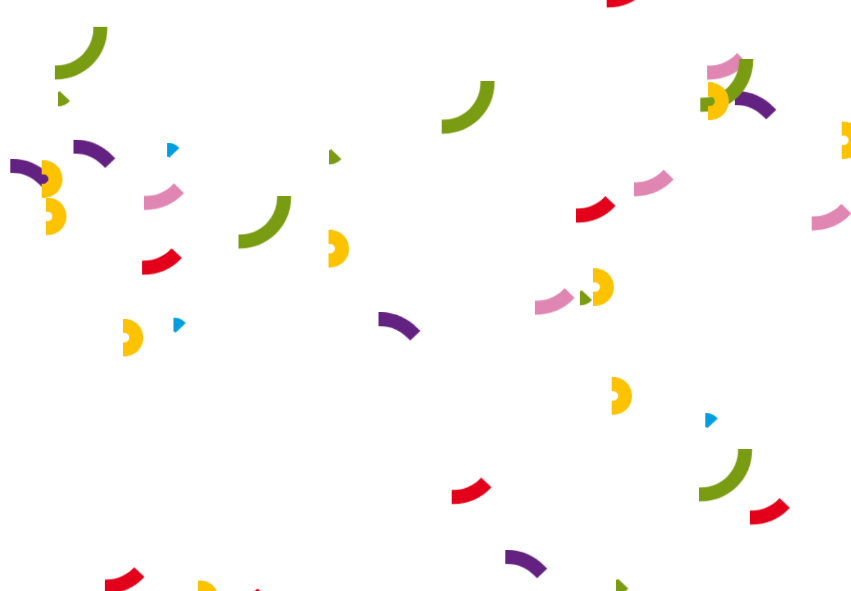
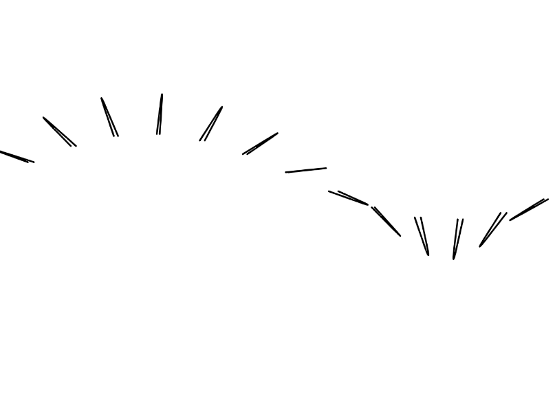
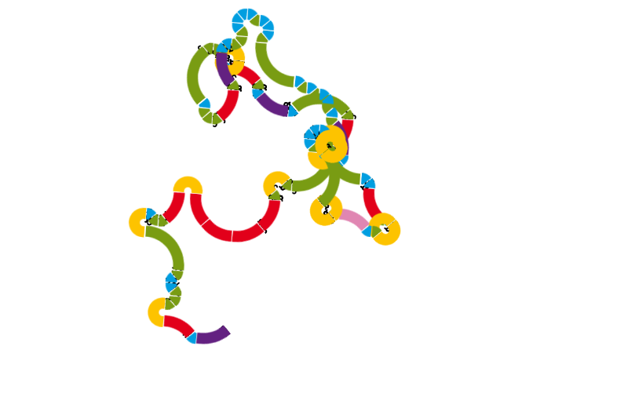
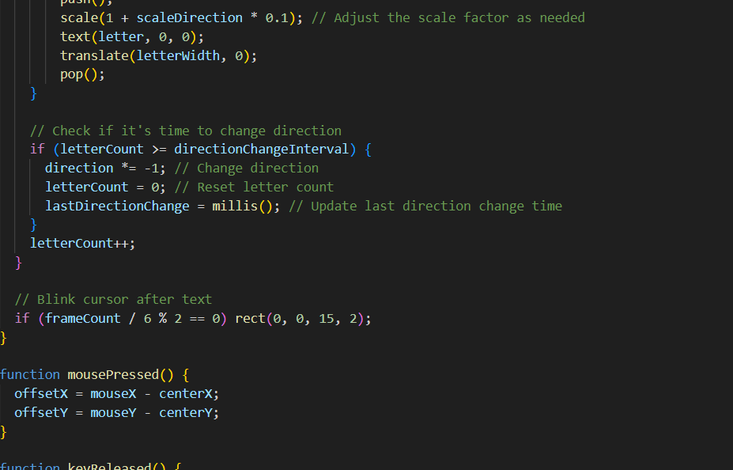

Experiment 6 - Grammars and Text
Imitate
To develop artistic creativity in coding, it can be helpful to start by studying and learning from existing examples. This might involve reviewing code written by others, analyzing successful techniques, or even copying and modifying code to better understand how it works. By imitating and learning from existing techniques and strategies, we can gain a better understanding of what has been done before and what is possible, and identify opportunities for improvement and innovation.
What code did you start with? (You don't need to provide the code itself, but where did you start?) Document this step briefly.
A: For this project I wanted to look at pieces that had already included text into their art. I picked these pieces because I like how interacting with them manipulated the art. I wanted to play around with these pieces a bit more by messing with the shapes to understand how the were formatted and functioned a bite better.
  Integrate
After learning from existing techniques and strategies, we can build upon that foundation by combining elements from different sources. This might involve combining elements from different programming languages, using libraries or frameworks in new ways, or bringing together techniques from different fields or disciplines. By integrating and combining elements from different sources, we can create something new and unique.
How did you extend the code or combine with another technique to make something new? Document this step.
A: When looking at "P_3_2_1_01" I was really inspired by the way the text was able to be manipulated but I wanted to change in a way where I could change the shapes even further and looked at more pieces to spark some direction for where I should take the piece. It was hard at first because I didn't know how much I could change the piece where text was involved but I really liked features that allowed for the shape and textures or letters to be maipulated and tried to add these features into the piece as well but it didn't end up being able to work out. Even though the directions I tried to take to incorporate different features didn't work it was still fun to discover these different features of other artworks.
 Innovate
Finally, we can introduce new or original ideas to our coding process by thinking creatively and pushing the boundaries. This might involve developing entirely new techniques or approaches, or using existing techniques in new and creative ways. By innovating and introducing new ideas, we can create art that is truly groundbreaking.
How did you use the code as a jumping off point to create something truly unique and novel? Document this step thoroughly.
The resuts were something that I ultimately wanted to come out very comfortable and even though my past attempts to incorporate different features weren't successful I'm glad that I was able to explore this piece mre and try to figure out how I could create something more unique. I decided that I really like the colorful features so I didn't want to change that and kept it. One thing I wanted was the permamnence of the painting, I added the feature of rotation so that the piece would never be the same once you decided to keep adding to it. I tried to make it so that the font would be able to change as well but unfortunately the letters aren't always visible because of this.
 
Reflection
Each person that worked on the code should reflect on the process, the difficulties, and the successes of the experiment. Here's where you can put your reflections.
- What part of the project you contributed
- A reflection on your work and the work of the team
- Brief highs and lows
A: I was the only one to work on this project and it was pretty challenging as I encountered a creative block while programming. It was a lot of fun to explore different art pieces but when it cae down to creating something new I think I had a hard time this week.